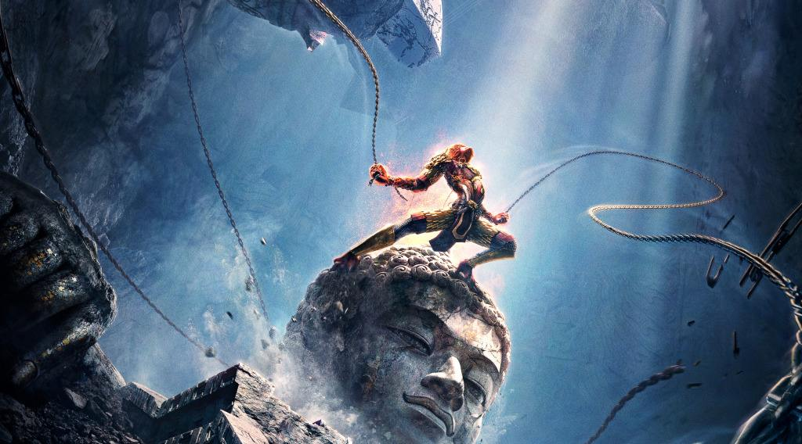
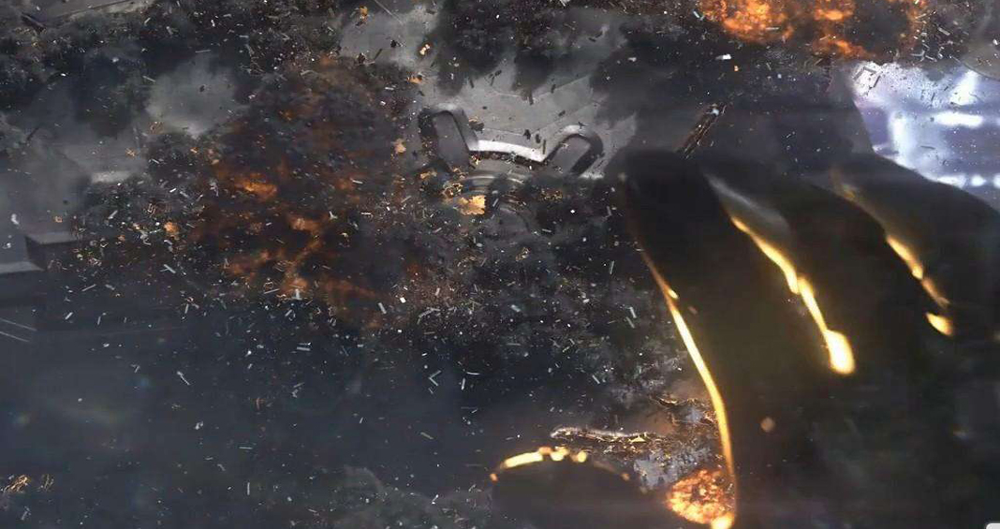

CG特效之混合特效
合成特效最常见的体现为古装片中的大侠施展轻功在天空飞来飞去。具体实施方法：演员打斗和天空分开拍摄，其中演员打斗部分由演员吊着钢丝在蓝幕或绿幕背景中拍摄，然后在电脑中利用后期软件将蓝幕和钢丝去掉，光留下演员部分再贴到实拍天空前面。这样看起来演员就像在天空中打斗。
CG特效电影在荧幕前一直都备受观众注视，它以自己独特的视觉艺术和精湛的创作技艺来赢得观众的热捧。特效片段，是许多科幻巨作剧情中不可缺少的元素，凭靠它可以升华整部电影的欣赏水平。

CG特效
CG是Computer Graphics的缩写，意指电脑视觉艺术设计，从20世纪70年代开始便开始将其用于影视制作中，电影中的视觉特效基本上都是由CG软件制作而成，在这个软件中分为建模、合成、材质、渲染等多个板块，每个板块又分别有不同的软件类型分支，各软件配合制作，才能制作出最终成品。
CG特效&传统特效
在CG电影中，影像合成是运用较多的CG技术，像科幻题材的《阿凡达》、灾难片《2012》 、励志片《阿甘正传》等，都有这一技术的光辉在闪耀。《速度与激情7》中“复活”的保罗·沃克，也同样是用这种方式呈现的。这为今后的影视特效行业打下了良好的基础
传统特效：在电脑出现之前所有特效都依赖传统特效完成。大家熟知的就是八十年代的西游记，里面妖魔鬼怪全部由传统特效的化妆完成。专业人士制作妖怪的面具，演员再套在头上进行拍摄。搭景体现为天宫的场景，建造一些类似于天宫的建筑，再放一些烟，就营造出天宫云雾缭绕的情景。但是也为今后的影视特效打下了良好的基础
近年来，“泰迪熊”、“少年派”等影视作品中表现现实的角色场景和CG元素结合的这一类型，
比较迎合当前电影市场发展趋势，符合大多数观众的审美和需求。在这类影片的拍摄花絮中不
难发现，前期阶段演员会在室内摄影棚中吧实拍的部分拍完，背景通常为绿幕的环境，一些影
片的拍摄根据需求还会让演员转配好动作捕捉的装备，用于后期的视频合成场景所用。这时候
剪辑和特效的比重会变得很大，也是对一个影片二次加工的过程。为了达到更好的视觉效果，
令实拍和虚拟结合的恰到好处。